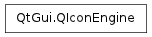

QIconEngine ¶

Inherited by: QIconEngineV2
Detailed Description ¶
The PySide.QtGui.QIconEngine class provides an abstract base class for PySide.QtGui.QIcon renderers.
Use :class:`PySide.QtGui.QIconEngineV2` **instead.
An icon engine provides the rendering functions for a PySide.QtGui.QIcon . Each icon has a corresponding icon engine that is responsible for drawing the icon with a requested size, mode and state.
The icon is rendered by the PySide.QtGui.QIconEngine.paint() function, and the icon can additionally be obtained as a pixmap with the PySide.QtGui.QIconEngine.pixmap() function (the default implementation simply uses PySide.QtGui.QIconEngine.paint() to achieve this). The PySide.QtGui.QIconEngine.addPixmap() function can be used to add new pixmaps to the icon engine, and is used by PySide.QtGui.QIcon to add specialized custom pixmaps.
The PySide.QtGui.QIconEngine.paint() , PySide.QtGui.QIconEngine.pixmap() , and PySide.QtGui.QIconEngine.addPixmap() functions are all virtual, and can therefore be reimplemented in subclasses of PySide.QtGui.QIconEngine .
See also
PySide.QtGui.QIconEngineV2 QIconEnginePlugin
- class PySide.QtGui. QIconEngine ¶
- PySide.QtGui.QIconEngine. actualSize ( size , mode , state ) ¶
-
Parameters: - size – PySide.QtCore.QSize
- mode – PySide.QtGui.QIcon.Mode
- state – PySide.QtGui.QIcon.State
Return type:
- PySide.QtGui.QIconEngine. addFile ( fileName , size , mode , state ) ¶
-
Parameters: - fileName – unicode
- size – PySide.QtCore.QSize
- mode – PySide.QtGui.QIcon.Mode
- state – PySide.QtGui.QIcon.State
- PySide.QtGui.QIconEngine. addPixmap ( pixmap , mode , state ) ¶
-
Parameters: - pixmap – PySide.QtGui.QPixmap
- mode – PySide.QtGui.QIcon.Mode
- state – PySide.QtGui.QIcon.State
- PySide.QtGui.QIconEngine. paint ( painter , rect , mode , state ) ¶
-
Parameters: - painter – PySide.QtGui.QPainter
- rect – PySide.QtCore.QRect
- mode – PySide.QtGui.QIcon.Mode
- state – PySide.QtGui.QIcon.State
- PySide.QtGui.QIconEngine. pixmap ( size , mode , state ) ¶
-
Parameters: - size – PySide.QtCore.QSize
- mode – PySide.QtGui.QIcon.Mode
- state – PySide.QtGui.QIcon.State
Return type: